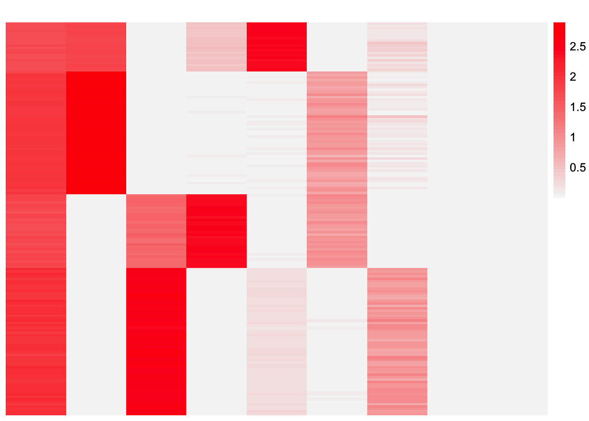

Last updated: 2026-06-27
Checks: 7 0
Knit directory:
symmetric_covariance_decomposition/
This reproducible R Markdown analysis was created with workflowr (version 1.7.2). The Checks tab describes the reproducibility checks that were applied when the results were created. The Past versions tab lists the development history.
Great! Since the R Markdown file has been committed to the Git repository, you know the exact version of the code that produced these results.
Great job! The global environment was empty. Objects defined in the global environment can affect the analysis in your R Markdown file in unknown ways. For reproduciblity it’s best to always run the code in an empty environment.
The command set.seed(20250408) was run prior to running
the code in the R Markdown file. Setting a seed ensures that any results
that rely on randomness, e.g. subsampling or permutations, are
reproducible.
Great job! Recording the operating system, R version, and package versions is critical for reproducibility.
Nice! There were no cached chunks for this analysis, so you can be confident that you successfully produced the results during this run.
Great job! Using relative paths to the files within your workflowr project makes it easier to run your code on other machines.
Great! You are using Git for version control. Tracking code development and connecting the code version to the results is critical for reproducibility.
The results in this page were generated with repository version 07a4194. See the Past versions tab to see a history of the changes made to the R Markdown and HTML files.
Note that you need to be careful to ensure that all relevant files for
the analysis have been committed to Git prior to generating the results
(you can use wflow_publish or
wflow_git_commit). workflowr only checks the R Markdown
file, but you know if there are other scripts or data files that it
depends on. Below is the status of the Git repository when the results
were generated:
Ignored files:
Ignored: .DS_Store
Ignored: .Rhistory
Ignored: analysis/.DS_Store
Ignored: data/.DS_Store
Untracked files:
Untracked: analysis/symebcovmf_backfit_debugging_case3.Rmd
Untracked: analysis/symebcovmf_overlap_backfit_exploration_part3.Rmd
Note that any generated files, e.g. HTML, png, CSS, etc., are not included in this status report because it is ok for generated content to have uncommitted changes.
These are the previous versions of the repository in which changes were
made to the R Markdown
(analysis/symebcovmf_backfit_debugging_case2.Rmd) and HTML
(docs/symebcovmf_backfit_debugging_case2.html) files. If
you’ve configured a remote Git repository (see
?wflow_git_remote), click on the hyperlinks in the table
below to view the files as they were in that past version.
| File | Version | Author | Date | Message |
|---|---|---|---|---|
| Rmd | 07a4194 | Annie Xie | 2026-06-27 | Add backfit debugging case 2 |
In this analysis, I am working on debugging the backfit function for symebcovmf. I ran into another issue with the symebcovmf backfit code while running the DSC.
library(pheatmap)
library(ggplot2)plot_heatmap <- function(L, title = "", colors_range = c("gray96", "red"), brks = NULL){
### define the color map
cols <- colorRampPalette(colors_range)(49)
if (is.null(brks) == TRUE){
brks <- seq(min(L), max(L), length=50)
}
plt <- pheatmap(L, show_rownames = FALSE, show_colnames = FALSE, cluster_rows = FALSE, cluster_cols = FALSE, color = cols, breaks = brks, main = title)
return(plt)
}There are a couple of settings where running the symebcovmf backfit yields an error about the standard errors in the EBNM problem. I will try to recreate that issue here.
We load in a balanced tree dataset.
baltree_4pop_17 <- readRDS('data/baltree_4pop_17.rds')library(symebcovmf)This is the backfit function:
sym_ebcovmf_backfit <- function(S, sym_ebcovmf_obj, ebnm_fn, backfit_maxiter = 100, backfit_tol = 10^(-8), optim_maxiter= 500, optim_tol = 10^(-8)){
K <- length(sym_ebcovmf_obj$lambda)
kset <- c(1:K)
iter <- 1
obj_diff <- Inf
sym_ebcovmf_obj$backfit_vec_elbo_full <- NULL
sym_ebcovmf_obj$backfit_iter_elbo_vec <- NULL
while((iter <= backfit_maxiter) && (obj_diff > backfit_tol)){
obj_old <- sym_ebcovmf_obj$elbo
# loop through each factor
for (k in kset){
R <- S - tcrossprod(sym_ebcovmf_obj$L_pm[,-k, drop = FALSE] %*% diag(sqrt(sym_ebcovmf_obj$lambda[-k]), ncol = (K-1)))
if(sym_ebcovmf_obj$lambda[k] == 0 | as.numeric(t(sym_ebcovmf_obj$L_pm[,k, drop = FALSE]) %*% R %*% sym_ebcovmf_obj$L_pm[,k, drop = FALSE]) <= 0){
print(paste('Skipping factor', k, 'because lambda is 0'))
next
}
print(paste('Updating factor', k))
# compute residual matrix
R2k <- compute_R2(S, sym_ebcovmf_obj$L_pm[,-k, drop = FALSE], sym_ebcovmf_obj$lambda[-k], (K-1))
# optimize factor
factor_proposed <- optimize_factor(R, ebnm_fn, optim_maxiter, optim_tol, sym_ebcovmf_obj$L_pm[,k], sym_ebcovmf_obj$lambda[k], sym_ebcovmf_obj$fitted_gs[[k]], R2k, sym_ebcovmf_obj$n, sym_ebcovmf_obj$KL[-k])
# update object
# check if update leads to increase in objective function
if ((factor_proposed$curr_elbo > sym_ebcovmf_obj$elbo) | (iter == 1)){
sym_ebcovmf_obj$L_pm[,k] <- factor_proposed$v
sym_ebcovmf_obj$KL[k] <- factor_proposed$rank_one_KL
sym_ebcovmf_obj$lambda[k] <- factor_proposed$lambda_k
sym_ebcovmf_obj$resid_s2 <- factor_proposed$resid_s2
sym_ebcovmf_obj$fitted_gs[[k]] <- factor_proposed$fitted_g_k
sym_ebcovmf_obj$elbo <- factor_proposed$curr_elbo
sym_ebcovmf_obj$backfit_vec_elbo_full <- c(sym_ebcovmf_obj$backfit_vec_elbo_full, factor_proposed$vec_elbo_full)
} else {
obj_diff <- sym_ebcovmf_obj$elbo - factor_proposed$curr_elbo
print(paste('update to factor', k, 'decreased the elbo by', abs(obj_diff)))
}
# add refitting step
sym_ebcovmf_obj <- refit_lambda(S, sym_ebcovmf_obj, maxiter = 1, remove_null = FALSE)
}
# kset <- which(sym_ebcovmf_obj$lambda != 0)
sym_ebcovmf_obj$backfit_iter_elbo_vec <- c(sym_ebcovmf_obj$backfit_iter_elbo_vec, sym_ebcovmf_obj$elbo)
iter <- iter + 1
obj_diff <- abs(sym_ebcovmf_obj$elbo - obj_old)
}
# nullcheck
sym_ebcovmf_obj <- nullcheck_factors(S, sym_ebcovmf_obj)
return(sym_ebcovmf_obj)
}We first run the symebcovmf greedy function with
Kmax = 14 (double the true number of factors) and the
point-exponential prior.
symebcovmf_greedy_fit <- sym_ebcovmf_fit(S = baltree_4pop_17$data$YYt,
ebnm_fn = ebnm::ebnm_point_exponential,
Kmax = 14,
maxiter = 500,
rank_one_tol = 10^(-8),
tol = 10^(-8),
refit_lam = TRUE)[1] "Adding factor 1"
[1] "Adding factor 2"
[1] "Adding factor 3"
[1] "Adding factor 4"
[1] "Adding factor 5"
[1] "Adding factor 6"
[1] "Adding factor 7"
[1] "Adding factor 8"
[1] "Adding factor 9"
[1] "Adding factor 10"
[1] "Adding factor 11"
[1] "Adding factor 12"
[1] "Adding factor 13"
[1] "Adding factor 14"This is the code to run the backfit:
symebcovmf_backfit_fit <- sym_ebcovmf_backfit(S = baltree_4pop_17$data$YYt,
sym_ebcovmf_obj = symebcovmf_greedy_fit,
ebnm_fn = ebnm::ebnm_point_exponential,
backfit_maxiter = 500,
backfit_tol = 10^(-8),
optim_maxiter = 500,
optim_tol = 10^(-8))When I run the backfit, I get an error about missing standard errors in the EBNM solver. Looking into this issue further, I found that this occurred because during the refitting step, one of the later lambda values (i.e. weights) was set to zero. However, the for loop is still set to go through all the current values in the kset vector, and so it will still try to update this factor. In that case, the standard errors are something divided by zero, i.e. undefined and so the EBNM solver throws back an error. To fix this issue, I will add a check in the for loop to make sure that the lambda value for the current factor is not zero before trying to update it.
We run the proposed modification here:
source('code/symebcovmf_debugging_script.R')symebcovmf_backfit_fit <- sym_ebcovmf_backfit_alt_v2(S = baltree_4pop_17$data$YYt,
sym_ebcovmf_obj = symebcovmf_greedy_fit,
ebnm_fn = ebnm::ebnm_point_exponential,
backfit_maxiter = 10,
backfit_tol = 10^(-8),
optim_maxiter = 500,
optim_tol = 10^(-8))[1] "Updating factor 1"
[1] "Updating factor 2"
[1] "elbo decreased by 2.46473064180464e-10"
[1] "Updating factor 3"
[1] "elbo decreased by 7.56699591875076e-10"
[1] "Updating factor 4"
[1] "Updating factor 5"
[1] "Updating factor 6"
[1] "elbo decreased by 0.522308687933219"
[1] "Updating factor 7"
[1] "Skipping factor 8 because lambda is 0"
[1] "Skipping factor 9 because lambda is 0"
[1] "Skipping factor 10 because lambda is 0"
[1] "Skipping factor 11 because lambda is 0"
[1] "Skipping factor 12 because lambda is 0"
[1] "Skipping factor 13 because lambda is 0"
[1] "Skipping factor 14 because lambda is 0"
[1] "Updating factor 1"
[1] "elbo decreased by 6.26641849521548e-09"
[1] "Updating factor 2"
[1] "elbo decreased by 1.29621184896678e-08"
[1] "Updating factor 3"
[1] "elbo decreased by 2.89219315163791e-10"
[1] "Updating factor 4"
[1] "elbo decreased by 9.36779542826116e-11"
[1] "Updating factor 5"
[1] "Updating factor 6"
[1] "Updating factor 7"
[1] "Updating factor 1"
[1] "elbo decreased by 1.28002284327522e-08"
[1] "Updating factor 2"
[1] "elbo decreased by 1.00699253380299e-08"
[1] "Updating factor 3"
[1] "elbo decreased by 3.64343577530235e-09"
[1] "Updating factor 4"
[1] "Updating factor 5"
[1] "Updating factor 6"
[1] "elbo decreased by 9.82254277914762e-11"
[1] "Updating factor 7"
[1] "elbo decreased by 2.5465851649642e-11"
[1] "Updating factor 1"
[1] "elbo decreased by 5.86078385822475e-09"
[1] "Updating factor 2"
[1] "elbo decreased by 2.42471287492663e-09"
[1] "Updating factor 3"
[1] "Updating factor 4"
[1] "elbo decreased by 1.8881110008806e-09"
[1] "Updating factor 5"
[1] "elbo decreased by 8.25821189209819e-10"
[1] "Updating factor 6"
[1] "Updating factor 7"
[1] "Updating factor 1"
[1] "elbo decreased by 2.23863025894389e-08"
[1] "Updating factor 2"
[1] "elbo decreased by 0.000611692894381122"
[1] "Updating factor 3"
[1] "elbo decreased by 1.45519152283669e-11"
[1] "Updating factor 4"
[1] "elbo decreased by 1.63345248438418e-09"
[1] "Updating factor 5"
[1] "Updating factor 6"
[1] "Updating factor 7"
[1] "elbo decreased by 4.72937244921923e-11"
[1] "Updating factor 1"
[1] "elbo decreased by 1.33513822220266e-08"
[1] "Updating factor 2"
[1] "elbo decreased by 0.000641700213236618"
[1] "Updating factor 3"
[1] "Updating factor 4"
[1] "Updating factor 5"
[1] "elbo decreased by 0.000266644263319904"
[1] "Updating factor 6"
[1] "Updating factor 7"
[1] "Updating factor 1"
[1] "Updating factor 2"
[1] "elbo decreased by 0.000550060052773915"
[1] "Updating factor 3"
[1] "elbo decreased by 1.58070179168135e-09"
[1] "Updating factor 4"
[1] "Updating factor 5"
[1] "elbo decreased by 0.000129822041344596"
[1] "Updating factor 6"
[1] "Updating factor 7"
[1] "Updating factor 1"
[1] "elbo decreased by 1.3365934137255e-08"
[1] "Updating factor 2"
[1] "elbo decreased by 0.000436321219240199"
[1] "Updating factor 3"
[1] "Updating factor 4"
[1] "Updating factor 5"
[1] "elbo decreased by 9.22520357562462e-05"
[1] "Updating factor 6"
[1] "Updating factor 7"
[1] "Updating factor 1"
[1] "elbo decreased by 1.17652234621346e-08"
[1] "Updating factor 2"
[1] "elbo decreased by 0.00035381670386414"
[1] "Updating factor 3"
[1] "elbo decreased by 1.54977897182107e-09"
[1] "Updating factor 4"
[1] "Updating factor 5"
[1] "elbo decreased by 0.000109776941826567"
[1] "Updating factor 6"
[1] "elbo decreased by 4.8748916015029e-10"
[1] "Updating factor 7"
[1] "Updating factor 1"
[1] "elbo decreased by 2.48073774855584e-08"
[1] "Updating factor 2"
[1] "elbo decreased by 0.000290069616312394"
[1] "Updating factor 3"
[1] "elbo decreased by 3.46335582435131e-09"
[1] "Updating factor 4"
[1] "elbo decreased by 1.73167791217566e-09"
[1] "Updating factor 5"
[1] "elbo decreased by 0.000149153202073649"
[1] "Updating factor 6"
[1] "Updating factor 7"
[1] "Updating factor 12"
[1] "elbo decreased by 32.5057487285139"
[1] "Updating factor 13"
[1] "elbo decreased by 2.42826123847772"
[1] "Skipping factor 14 because lambda is 0"These are the results. This is the number of factors in the loadings estimate:
ncol(symebcovmf_backfit_fit$L_pm)[1] 9This is a heatmap of the loadings estimate:
plot_heatmap(symebcovmf_backfit_fit$L_pm %*% diag(sqrt(symebcovmf_backfit_fit$lambda)))
The modified backfit runs in this case.
I have a backfit function which runs which is good. However, I did notice some interesting behavior in the backfit. First, I noticed that for some of the weights, in the beginning iterations they were set to zero, but at some point in the later iterations, they became positive again. I guess that is not so surprising (e.g. this type of behavior is also seen occasionally in LASSO - coefficients that were set to zero at some point in the path could become non-zero again at a later point in the path). But intuitively, I would expect that if a factor is being zeroed out, then that means it is not needed and so we should be able to safely remove it from consideration in the later iterations.
Another thing I noticed is that in the final estimate, the KL divergence estimates for the spurious factors is negative.
These are the KL divergence values:
symebcovmf_backfit_fit$KL[1] -938.027139 -556.301613 -636.731168 -487.804385 -547.790026 -456.440881
[7] -495.888664 32.505728 2.428222The KL divergence is not negative, so I am not sure why this is happening. I have not seen this issue with the point-exponential prior EBNM solver before (if the KL divergence is non-zero, it is very small). I have seen this issue with the generalized-binary prior EBNM solver, but I thought it was due to a bug in the solver. I need to think more about why this issue is happening here.
sessionInfo()R version 4.5.3 (2026-03-11)
Platform: aarch64-apple-darwin20
Running under: macOS Tahoe 26.5.1
Matrix products: default
BLAS: /Library/Frameworks/R.framework/Versions/4.5-arm64/Resources/lib/libRblas.0.dylib
LAPACK: /Library/Frameworks/R.framework/Versions/4.5-arm64/Resources/lib/libRlapack.dylib; LAPACK version 3.12.1
locale:
[1] en_US.UTF-8/en_US.UTF-8/en_US.UTF-8/C/en_US.UTF-8/en_US.UTF-8
time zone: America/Chicago
tzcode source: internal
attached base packages:
[1] stats graphics grDevices utils datasets methods base
other attached packages:
[1] symebcovmf_0.0.0.9000 ggplot2_4.0.2 pheatmap_1.0.13
[4] workflowr_1.7.2
loaded via a namespace (and not attached):
[1] sass_0.4.10 generics_0.1.4 ashr_2.2-67 lattice_0.22-9
[5] stringi_1.8.7 digest_0.6.39 magrittr_2.0.4 evaluate_1.0.5
[9] grid_4.5.3 RColorBrewer_1.1-3 fastmap_1.2.0 rprojroot_2.1.1
[13] jsonlite_2.0.0 Matrix_1.7-4 processx_3.8.6 whisker_0.4.1
[17] RSpectra_0.16-2 mixsqp_0.3-54 ps_1.9.1 promises_1.5.0
[21] httr_1.4.8 scales_1.4.0 truncnorm_1.0-9 invgamma_1.2
[25] jquerylib_0.1.4 cli_3.6.5 rlang_1.1.7 deconvolveR_1.2-1
[29] splines_4.5.3 withr_3.0.2 cachem_1.1.0 yaml_2.3.12
[33] ebnm_1.1-42 otel_0.2.0 SQUAREM_2026.1 tools_4.5.3
[37] dplyr_1.2.0 httpuv_1.6.16 vctrs_0.7.1 R6_2.6.1
[41] lifecycle_1.0.5 git2r_0.36.2 stringr_1.6.0 fs_1.6.7
[45] trust_0.1-9 irlba_2.3.7 pkgconfig_2.0.3 callr_3.7.6
[49] pillar_1.11.1 bslib_0.10.0 later_1.4.8 gtable_0.3.6
[53] glue_1.8.0 Rcpp_1.1.1 xfun_0.56 tibble_3.3.1
[57] tidyselect_1.2.1 rstudioapi_0.18.0 knitr_1.51 farver_2.1.2
[61] htmltools_0.5.9 rmarkdown_2.30 compiler_4.5.3 getPass_0.2-4
[65] S7_0.2.1